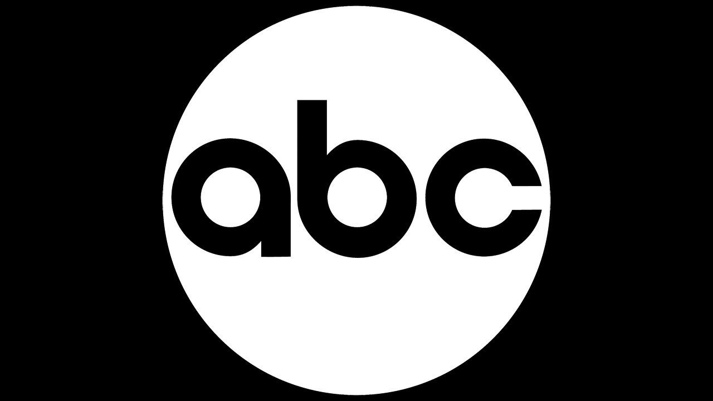

Series
Series de:
American Broadcasting Company
 Cadena de televisión de radiodifusión comercial conocida en Estados Unidos y Canadá.Agents of S.H.I.E.L.D.
 (Para entender esta referencia haga click aquí)
(Para entender esta referencia haga click aquí)
Serie de televisión basada en la famosa organización de Marvel Comics. Fue producida por Marvel Television y emitida por la cadena ABC en Estados Unidos, mientras que en América Hispana fue emitida por Canal Sony. Se desarrolla después de los sucesos de The Avengers y Iron Man 3, y está vinculada con Thor: The Dark World, Captain America: The Winter Soldier, Avengers: Age of Ultron, Ant-Man, Captain America: Civil War, Doctor Strange y Avengers: Infinity War. Cuenta con 7 temporadas, comenzando desde 2013 y finalizando en 2020
Agent Carter
 (Para entender esta referencia haga click aquí)
(Para entender esta referencia haga click aquí)
Serie de televisión basada en la personaje de Marvel Comics, Margaret Carter. Fue producida por Marvel Television y fue emitida en la cadena ABC. Cuenta con 2 temporadas las cuales se estrenaron en 2015 y 2016 respecivamente, dando una totalidad de 18 capitulos en total para posteriormente anunciarse su cancelación luego de 11 días después del estreno de su segunda temporada
Inhumans
 (Para entender esta referencia haga click aquí)
(Para entender esta referencia haga click aquí)
Serie de televisión basada en la Familia Real Inhumana. Fue producida por Marvel Television y fue emitida en la cadena ABC. Se estrenó en 2017, cuenta con solo 1 temporada y cuenta con solo 8 capitulo. El 11 de mayo de 2018, la serie fue cancelada.
Netflix
Empresa de entretenimiento estadounidense, que distribuye contenidos audiovisuales a través de una plataforma en líneaDaredevil
 (Para entender esta referencia haga click aquí)
(Para entender esta referencia haga click aquí)
Serie de televisión protagonizada por el superhéroe del mismo nombre. Fue producida por Marvel Television y se estrenó en Netflix. Cuenta con 39 capitulo divididos en 3 temporadas, la primera y segunda temporada se estrenaron en 2015, la segunda y tercera temporada se estrenaron en 2016 y por ultimo, la tercera temporada se estreno en 2018. Y un mes después del estreno de su tercer temporada, la serie fue cancelada.
Jessica Jones
 (Para entender esta referencia haga click aquí)
(Para entender esta referencia haga click aquí)
Serie de televisión protagonizada por la superheroina del mismo nombre. Fue producida por Marvel Television y se estrenó en Netflix. Cuenta con 39 capitulos divididos en 3 temporadas, la primera temporada fueron estrenadas en 2015 la segunda temporada se estreno en 2018 y la tercer temporada se estreno en 2019 y en ese mismo año la serie fue cancelada por Netflix.
Luke Cage
 (Para entender esta referencia haga click aquí)
(Para entender esta referencia haga click aquí)
Serie de televisión protagonizada por el superhéroe del mismo nombre. Fue producida por Marvel Television y se estrenó en Netflix. Cuenta con 26 capitulos divididos en 2 temporadas, la primera temporada fue estrenada en 2016 y la segunda fue estrenada en 2018 mismo año en la que fue cancelada por Netflix.
Iron Fist
(Para entender esta referencia haga click aquí)
Serie de televisión protagonizada por el superhéroe del mismo nombre. Fue producida por Marvel Television y se estrenó en Netflix. Cuenta con 23 capitulos divididos en 2 temporadas, las cuales se estrenaron en 2017 y 2018 respectivamente, siento 2018 también el año en el que fue cancelada por Netflix
The Defenders
 (Para entender esta referencia haga click aquí)
(Para entender esta referencia haga click aquí)
Serie de televisión protagonizada por Matthew Murdock, Jessica Jones, Luke Cage y Daniel Rand. Se trata de un crossover-secuela de las series Daredevil, Jessica Jones, Luke Cage y Iron Fist. Fue producida por Marvel Television y se estrenó en Netflix. Se estrenó el 18 de agosto de 2017 a nivel internacional y cuenta solo con una temporada de 8 capitulos
The Punisher
(Para entender esta referencia haga click aquí)
Serie de televisión protagonizada por el superhéroe del mismo nombre. Fue producida por Marvel Television y se estrenó en Netflix. Cuenta con 26 capitulos divididos en 2 temporadas, estrenadas en 2017 la primera temporada y en 2019 la segunda temporada, siendo este año también el año en el que se cancelo.
Hulu
Servicio de video a pedido de suscripción estadounidense propiedad de Walt Disney. Disponible en Japón y Estados Unidos, y sus territorios extranjeros.Runaways
 (Para entender esta referencia haga click aquí)
(Para entender esta referencia haga click aquí)
Serie de televisión protagonizada por el equipo de superhéroes del mismo nombre. Fue producida por Marvel Television y se estrenó en Hulu. Esta serie cuenta con 33 capitulos que se dividen en 3 temporadas, la primera se estreno en 2017, la segunda 2018 y por ultimo la tercera 2019 año en el que se canceló también.
Freeform
Canal de televisión por cable que se emite en Estados Unidos y Canadá.Cloak & Dagger
 (Para entender esta referencia haga click aquí)
(Para entender esta referencia haga click aquí)
Serie de televisión basada en los personajes de Marvel Comics, Tyrone Johnson y Tandy Bowen. Fue producida por Marvel Television y se estrenó en Freeform. Cuenta con 10 capitulos separados en 2 temporadas, la primera estrenada en 2018 y la segunda temporada se estreno en 2019 mismo año en el que fue cancelada la serie.
Disney+
Plataforma de streaming estadounidense propiedad de Disney Streaming ServicesWandaVision
 (Para entender esta referencia haga click aquí)
(Para entender esta referencia haga click aquí)
Serie de televisión en línea basada en los personajes de Marvel Comics, Wanda Maximoff/Bruja Escarlata y Visión. La serie es una secuela de Avengers:Endgame y precuela de Doctor Strange in the Multiverse of Madness. Es la primera serie de televisión de la Fase Cuatro del Universo Cinematográfico de Marvel. La primera temporada se estrenó en 2021 y contó de nueve episodios.
Trailer temporada 1The Falcon and the Winter Soldier
 (Para entender esta referencia haga click aquí)
(Para entender esta referencia haga click aquí)
Serie de televisión en línea basada en los personajes de Marvel Comics, Samuel Wilson/Falcon y James Barnes/Soldado del Invierno. La serie es una secuela de Avengers: Endgame. Es la segunda serie de televisión de la Fase Cuatro del Universo Cinematográfico de Marvel. Serie de temporada unica que cuenta solo con 6 capitulos que se estreno el 19 de marzo del 2021
Trailer temporada 1Loki

 (Para entender esta referencia haga click aquí)
(Para entender esta referencia haga click aquí)
Serie de televisión en línea basada en el personaje de Marvel Comics del mismo nombre. Se trata la tercera serie de televisión de la Fase Cuatro del Universo Cinematográfico de Marvel y una secuela de Avengers: Endgame. La primera temporada se estrenó el 9 de junio de 2021 y ya se confirmó una segunda temporada
Trailer temporada 1What If...?
 (Para entender esta referencia haga click aquí)
(Para entender esta referencia haga click aquí)
Serie de televisión animada en línea basada en la serie de Marvel Comics del mismo nombre. Es la cuarta serie de televisión de la Fase Cuatro del Universo Cinematográfico de Marvel.La primera temporada contó con nueve episodios y se estrenó en 2021
Trailer temporada 1